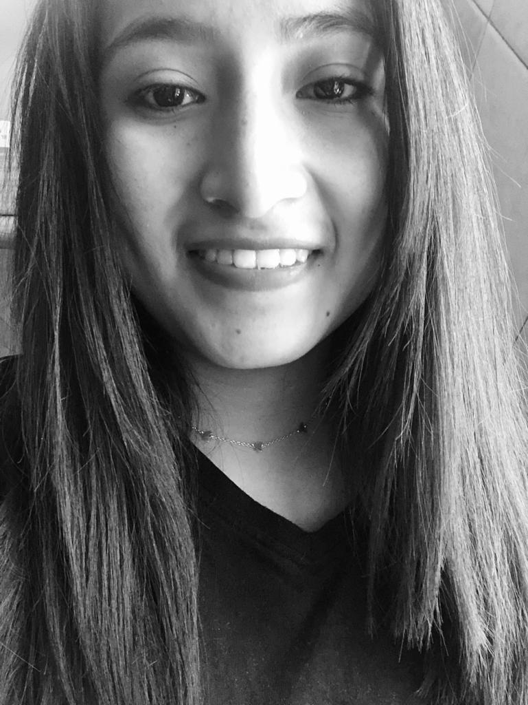

Mishell Farinango
Decir que la fotografía me gusta puede sonar a cliché pero me encanta y me gustaría que pudieses verlo en persona. La fotografía no son solo imágenes son momentos únicos captados para siempre. Y eso quiero hacer a través de mi trabajo, crear recuerdos perdurables y captar toda la esencia que el mundo nos ofrece día a día.